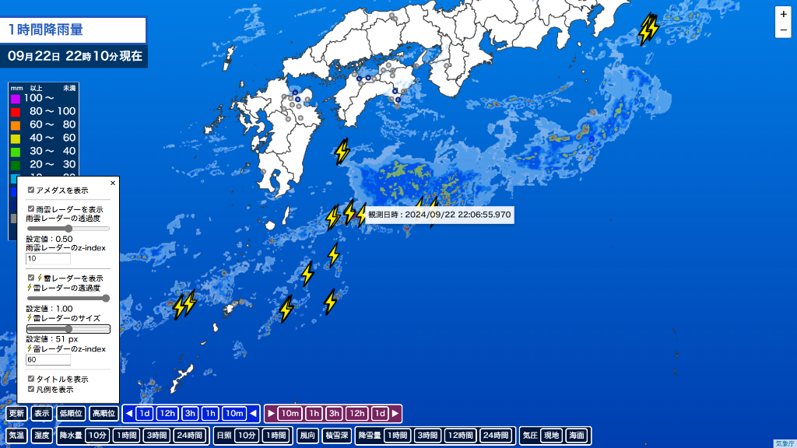

雷レーダー機能追加のお知らせ
雷レーダー機能追加のお知らせアップデートの詳細は以下のとおりです。
-
新機能
- 雷レーダー機能の追加を行いました。モードが降水量の場合、自動的に表示されます。その他のモードの場合でも「表示」ボタンから表示させることができます。
また、表示/非表示や透明度、アイコンサイズ、重ね順を「表示」ボタンから設定することができます。
時間を前後させる動作をした際は、「更新」ボタンを押して最新の時刻に戻すまで、雷レーダー機能は使用できません。

- 雷レーダー機能の追加を行いました。モードが降水量の場合、自動的に表示されます。その他のモードの場合でも「表示」ボタンから表示させることができます。